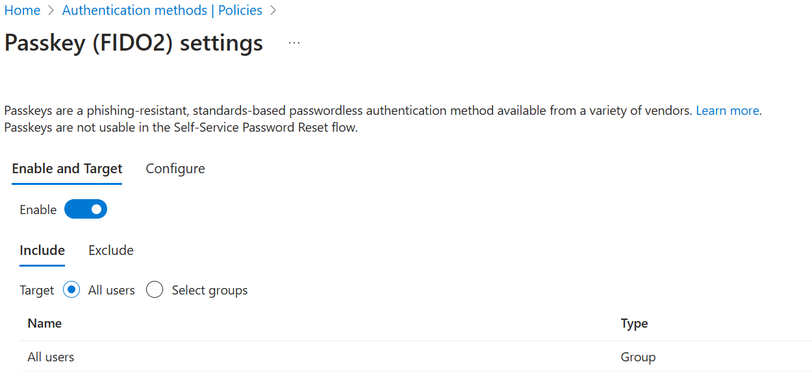
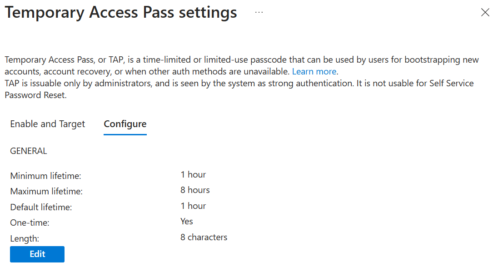

Getting Started
Configure Consent and Entra ID Settings
To allow CheckID to function correctly, you'll need to configure a few settings in Microsoft Entra ID.
Step 1 – Consent to the CheckID Application
As a Global Administrator, you need to provide tenant-wide admin consent for the CheckID app.
Visit the following URL to review and approve the necessary permissions:
https://login.microsoftonline.com/common/adminConsent?client_id=b1c6646a-37c6-4a69-ae96-d6468e2c2a89
Permissions requested
| Permission | Why it’s needed |
|---|---|
| User.Read.All | Allows CheckID to locate and read user account details in your tenant |
| UserAuthenticationMethod.ReadWrite.All | Allows CheckID to create a Temporary Access Pass (TAP) for users |
| CustomSecAttributeAssignment.Read.All | Enables CheckID to read custom attribute assignments. This permission has no effect unless the CheckID service principal is explicitly assigned the Attribute assignment reader role in Microsoft Entra. |
Step 2 - Configure Temporary Access Pass
Our recommended onboarding approach is to have users register the Microsoft Authenticator app using a Temporary Access Pass, while getting a passkey enrolled at the same time. This means that the feature Temporary Access Pass and Passkey should be enabled in the tenant.
In the Entra portal, open Protection and Authentication methods.
Configure Passkey (FIDO2) to target all users with the below configuration:

Configure Temporary Access Pass to target all users with the below configuration:
